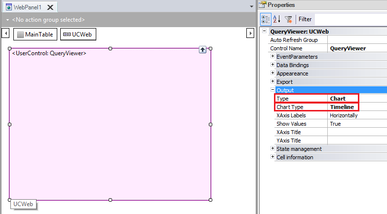
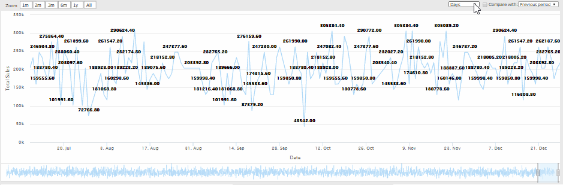

The concept of Timeline refers to a chart where the X axis is always time. So, a timeline chart offers a way to display the variation of a series of values over time, allowing to see easily and compare the evolution of a process or focus on a defined period. GeneXus developers can define this type of chart by using the QueryViewer control. To do so, a QueryViewer control (inserted in a web form) must have its Type property set to Chart, so that its Chart Type property may be set to Timeline:  A Timeline chart can only be used for queries that have a single attribute (or expression) of Date or DateTime type as an axis and nothing else. Meanwhile, it can have any number of attributes or expressions that act as data.
At the bottom, it provides a couple of cursors to select a time window of any width and origin (different than those provided by the Zoom button). As an example of use of this type of Chart, the animation below shows the sales made by a company in a determined period:  Variants
|
| Backlinks | |
| QueryViewer Chart Type property | Category:QueryViewer control |
| QueryViewer with High Charts (JS) | |